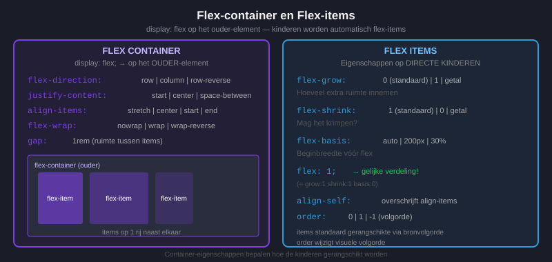
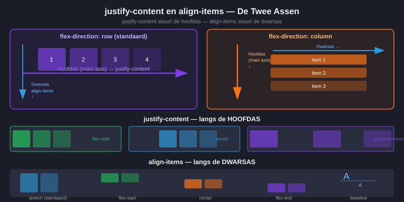
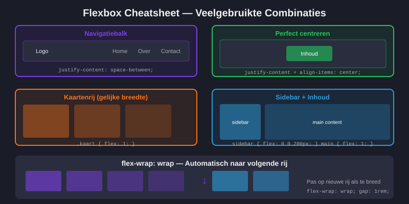
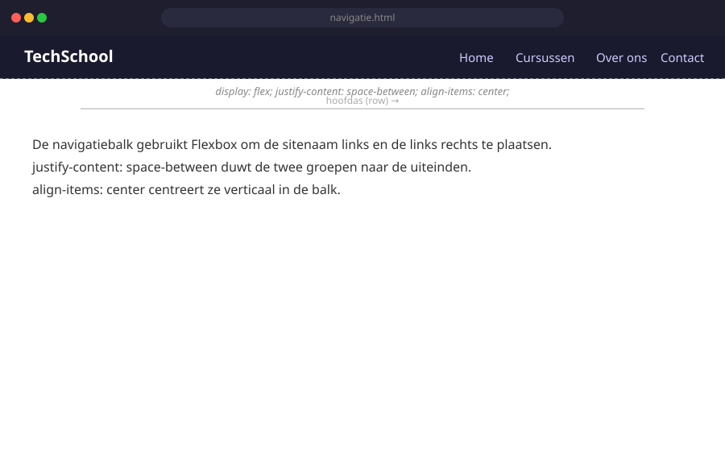
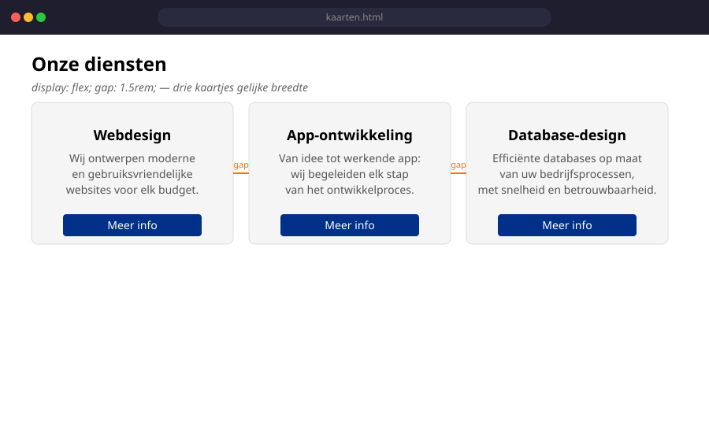

CSS Flexbox
- Uitleggen wat Flexbox is en wanneer je het gebruikt
- Het verschil kennen tussen een flex-container en flex-items
- De hoofdas en de nevenas uitleggen
flex-direction,justify-content,align-itemsenflex-wrapcorrect toepassenflex-grow,flex-shrinkenflex-basisbegrijpen en gebruikengapgebruiken voor ruimte tussen flex-items- Een navigatiebalk bouwen met Flexbox
- Begrijpen waarom
floatvoor lay-out verouderd is
1. Waarom Flexbox?
Voor Flexbox bestond was het aanmaken van lay-outs in CSS een pijnlijk proces. Developers gebruikten float of inline-block — beide zijn omslachtig en leveren vaak onverwachte problemen op.
Flexbox is ontworpen om dit probleem op te lossen. Het maakt het eenvoudig om:
- Elementen naast elkaar of onder elkaar te plaatsen
- Ruimte gelijkmatig te verdelen
- Elementen te centreren (eindelijk gemakkelijk!)
- De volgorde van elementen aan te passen
Wanneer gebruik je Flexbox? Flexbox is ideaal voor één richting tegelijk: ofwel een rij (horizontaal), ofwel een kolom (verticaal). Denk aan navigatiebalken, kaartenrijen, formulierrijen.
2. Flex-container vs. flex-items
Alles begint met één CSS-eigenschap:
.container {
display: flex;
}Dit verandert het element in een flex-container. De directe kinderen worden automatisch flex-items.
<div class="container"> <!-- flex-container -->
<div>Item 1</div> <!-- flex-item -->
<div>Item 2</div> <!-- flex-item -->
<div>Item 3</div> <!-- flex-item -->
</div>
3. De twee assen
Bij Flexbox werkt alles rond twee assen:
- Hoofdas (main axis): De richting waarin de flex-items worden geplaatst. Standaard is dit horizontaal.
- Nevenas (cross axis): Loodrecht op de hoofdas. Standaard is dit verticaal.
.container {
display: flex;
flex-direction: row; /* standaard: horizontaal → */
}
.container {
display: flex;
flex-direction: column; /* verticaal ↓ */
}4. Ruimte verdelen langs de hoofdas: justify-content
justify-content bepaalt hoe de flex-items verdeeld worden langs de hoofdas.
| Waarde | Resultaat |
|---|---|
flex-start | Alle items aan het begin (standaard) |
flex-end | Alle items aan het einde |
center | Items gecentreerd |
space-between | Eerste en laatste item aan de rand, rest verdeeld |
space-around | Gelijke ruimte rondom elk item |
space-evenly | Gelijke ruimte tussen en rondom alle items |
/* Navigatiebalk: logo links, links rechts */
nav {
display: flex;
justify-content: space-between;
}5. Items uitlijnen langs de nevenas: align-items
align-items bepaalt hoe de flex-items uitgelijnd worden langs de nevenas.
| Waarde | Resultaat |
|---|---|
stretch | Items rekken uit tot de hoogte van de container (standaard) |
flex-start | Items bovenaan uitlijnen |
flex-end | Items onderaan uitlijnen |
center | Items verticaal centreren |
baseline | Items uitlijnen op hun tekstbasislijn |
Verticaal centreren was vroeger lastig — nu eenvoudig:
.container {
display: flex;
justify-content: center; /* horizontaal centreren */
align-items: center; /* verticaal centreren */
min-height: 100vh;
}
6. Afbreken: flex-wrap
Standaard proberen flex-items allemaal op één rij te passen. Met flex-wrap: wrap mogen ze naar de volgende rij gaan:
.container {
display: flex;
flex-wrap: wrap;
gap: 1rem;
}7. Ruimte tussen items: gap
.container {
display: flex;
gap: 1rem; /* gelijke ruimte in alle richtingen */
/* of: */
gap: 1rem 2rem; /* rij-gap | kolom-gap */
}Voordeel van gap boven margin: de eerste en laatste items krijgen geen extra ruimte aan de buitenkant.
8. Eigenschappen van flex-items
8.1 flex-grow — groeien
.item {
flex-grow: 1; /* mag groeien om beschikbare ruimte te vullen */
}
.groot-item {
flex-grow: 2; /* groeit dubbel zo snel als flex-grow: 1 */
}8.2 flex-shrink — krimpen
.item { flex-shrink: 1; } /* mag krimpen (standaard) */
.niet-krimpen { flex-shrink: 0; } /* krimpt nooit */8.3 flex-basis — startgrootte
.item { flex-basis: 200px; } /* startbreedte van 200px */
.item { flex-basis: 33%; } /* startbreedte van 33% */8.4 De snelnotatie: flex
/* flex: grow shrink basis */
.item {
flex: 1; /* = flex: 1 1 0 — meest gebruikt voor gelijke kolommen */
}9. Navigatie bouwen met Flexbox
nav ul {
display: flex;
list-style: none;
margin: 0;
padding: 0;
gap: 1rem;
}
nav a {
text-decoration: none;
color: white;
padding: 0.5rem 1rem;
}
nav a:hover {
background-color: rgba(255, 255, 255, 0.1);
border-radius: 4px;
}Logo links, links rechts — met margin-left: auto:
nav ul {
display: flex;
align-items: center;
gap: 1rem;
}
/* Het logo-item duwt alle andere items naar rechts */
nav ul li:first-child {
margin-right: auto;
}
10. Float is verouderd voor lay-out
/* VEROUDERDE manier — doe dit NIET meer voor lay-out */
.kolom {
float: left;
width: 33%;
}
/* Daarna moest je ook nog een clearfix toevoegen... */Gebruik float nog wel voor: tekst die rondom een afbeelding loopt (zie H14).
Gebruik Flexbox voor: navigatiebalken, kaartenrijen, elementen naast of onder elkaar plaatsen.
Oefeningen
Maak een HTML-bestand navigatie.html met een navigatiebalk die:
- Een sitenaam/logo links heeft
- Vier navigatielinks rechts heeft
- Een donkere achtergrond heeft
- Bij hover de link-kleur verandert

Maak drie kaartjes naast elkaar met Flexbox. De kaartjes moeten gelijke breedte hebben en ruimte ertussen.

Huistaak
Opdracht: Flexbox-layout voor een blogpagina
Maak een pagina blog.html met bijhorend blog.css. De pagina is een nep-blogpagina met een flexbox-layout. Gebruik geen float, geen grid voor de hoofdlayout — enkel flexbox.
Deel 1 — Navigatiebalk (3 punten)
- Een horizontale navigatiebalk die de volledige breedte inneemt
- Logo links, navigatielinks rechts — gebruik
justify-content: space-between - Links worden op mobiele breedte (< 600px) verticaal gestapeld via
flex-direction: column
Deel 2 — Kaartenrij (4 punten)
- Minstens 3 blogkaarten naast elkaar met
display: flexenflex-wrap: wrap - Elke kaart heeft een titel, een korte beschrijving en een "Lees meer"-knop onderaan
- De knop staat altijd onderaan de kaart, ongeacht de lengte van de tekst (tip: gebruik
flex-direction: columnop de kaart zelf metmargin-top: autoop de knop) - Gebruik
gapvoor de ruimte tussen de kaarten
Deel 3 — Gecentreerd hero-blok (3 punten)
- Een volledige breedte hero-sectie met gecentreerde tekst (horizontaal én verticaal)
- Gebruik
display: flex; align-items: center; justify-content: center; - Minimumhoogte van
300px
Vragenlijst
Controleer of je de leerstof van dit hoofdstuk begrijpt.
Welke CSS-eigenschap activeer je op de container om Flexbox te starten?
Welke eigenschap gebruik je om flex-items verticaal te centreren?
Welke waarde van justify-content plaatst het eerste item links en het laatste item rechts?
Wat doet flex-wrap: wrap?
Wat is de snelnotatie voor flex-grow: 1; flex-shrink: 1; flex-basis: 0?
Flexbox is het beste geschikt voor: